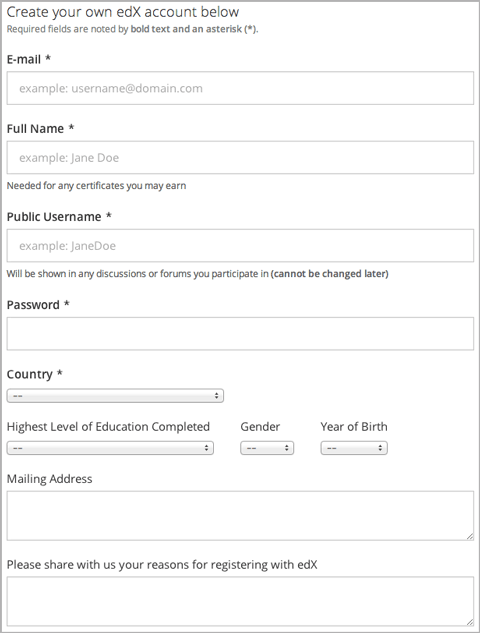
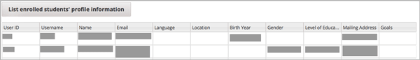

课程创建后，您可以随时访问学生的数据信息。 请看下面的章节：
出于评分原因，您也可以查看学生的个人信息统计表。详见 Using edX Insights.
edX从官网登记用户中收集的个人信息可用于认证、联系及定位。 课程作者有权访问学生的个人信息。
课程工作人员应遵守所在机构制定的规章制度，同时遵守所在地关于个人信息的法律条款， 不得将个人信息外泄，不得盗用他人信息。
您可以CSV（逗号分隔值）文件格式下载当前参与课程学生的数据。 如果学生人数少于200人，您也可以在教师面板中查看学生数据。
当学生注册edX帐户时，会选择一个公开可见的用户名，并提供相关的个人信息。 但这并不是硬性要求，所以不是所有的学生都会提供个人信息的。

然后，学生可根据兴趣注册各种各样的课程，注册后则成为该课程的参与者。
您可以访问课程内所有学生自主提供的个人信息，包括：
程工作人员可访问的个人信息永远只包括当前参与课程的学生。 学生可以在课程招生日期内注册您的课程，也可以随时退出课程。 他们也可以随时更改电子邮箱地址和真实姓名。 所以，您可以定时查看这些信息，掌握学生人数变化趋势。
Note
以后的更新中，edX可能会要求学生选择自己的语言和所在地。目前的版本尚未执行。
您可在特定时间段下载学生个人信息报告，了解学生人数情况， 并通过不同时期内学生人数的比较绘制学生人数变化趋势图。 对于分队课程而言，这份个人信息报告也会包括学生的分队情况。
当您选择下载学生数据时，edX服务器会创建一个下载进程。 课程内学生的数量，以及课程是否包含分队功能将决定下载时间长短。 您可以在下载完毕后将学生信息简报保存为CSV格式。
如果课程学生人数少于200人，您可以在教师面板中查看学生数据。
Note
除了学生数据外，您还可以查看课程员工的数据信息。
如何下载学生数据：
此时会出现提示消息，显示下载正在进行中。 这个过程可能要持续一段时间，但是在等待过程中您可以跳到其他页面，干别的事情。
如果想查看下载进度，可以在浏览器中重新加载页面，将滚动条拖至 正在进行的教师任务 区域。
{course_id}_student_profile_info_{date}.csv 文件名，打开或保存学生信息简报该文件包含所有学生提供的数据信息。
如何查看学生数据：
Note
仅当学生人数少于200时才可选择此功能。
查看课程现况
单击 导师 → 数据下载
单击 列出学生信息简报 查看学生数据
此时会打开一张学生数据表，每一行代表一个学生。比较长的内容，比如学习期望等，只能看见前几句话。

如果该课程启用了分队功能，则会增加“分队”栏，显示学生的分队情况。
Note
为保持向后兼容性，本报告包含“语言”和“所在地”栏。但在学生注册过程中，不会显示这两项。
edX平台的某些插件，比如外挂评分工具和调查工具，需要提供解析后的学生数据。 如果您需要解析之前加密的数据，可以下载一个CSV文件。
如何下载指定用户ID和匿名用户ID文件：
此时您需要打开或保存课程的{course-id}-anon-id.csv文件。 该文件包含了学生注册时系统自动分配的ID、edX范围内的匿名ID以及某课程范围内的匿名ID。 只要是曾经参加过课程的学生，都拥有这三个ID。
您可将这个CSV文件与 {course_id}_student_profile_info_{date}.csv 学生数据文件、
{course_id}_grade_report_{date}.csv 学生成绩文件配合起来使用，
达到解析学生数据的目的。
通过学生互动报告，您可以查看每个学生在课程中的表现。 报告中每个学生占一行，纵列中显示所有课程活动和与问题、视频、论坛和课本的交互情况。
通过此报告，您可以看出哪些学生在浏览课程内容。进一步，哪些学生尝试回答问题、 播放视频、参与讨论或浏览课本。
服务器每天都生成当天的学生互动报告。每周一将生成一周总结报告（自周一至周日）。
为检测问题相关活动，学生互动报告包含capa问题数据。 即报告包含学生可选择 勾选 的问题，包括以下问题类型。
- 复选框
- Custom JavaScript
- 拖拽
- 下拉
- 数学方程式输入
- 多项选择
- 数字输入
- 文本输入
报告不包含公开响应评估和LIT组件数据。
更多关于问题类型的信息请参阅 Creating Exercises and Tools 。
学生互动报告.csv文件包含以下内容。
| 列 | 描述 |
|---|---|
| 日期 | 只在每日报告中。活动日期。 |
| 结束日期 | 只在每周报告中。报告中的最后一天。 |
| 课程 ID | 课程运行的识别符。 |
| 用户名 | edX账户的唯一用户名。 |
| edX账户的唯一邮箱地址。 | |
| 队列 | 学生所在队列。如果学生不在任何队列中，此项为空。 |
| 是否活跃Was Active | 只在每日报告中。1指学生在报告日中至少有一次访问课程的任何页面。 反之为0. |
| 本周活跃天数 | 只在每周报告中。显示本周学生访问课程任何页面的天数。 |
| 单个问题尝试 | 单个问题中学生点击 确定 提交答案的次数。 |
| 问题尝试总数 | 学生点击 确定 提交答案的总次数。 |
| 单个问题正确回答 | 单个问题中学生提交正确答案的次数。 |
| 单个视频播放 | 学生播放单个视频的次数。 学生开始播放一个视频算一次。 |
| 论坛发帖 | 学生在课程论坛发布的新帖数量。 |
| 论坛回复 | 学生在课程论坛中的回复次数。 |
| 论坛评论 | 学生在课程论坛中发布的评论数量。 |
| 课本浏览页数 | 学生浏览过的.pdf格式课本的页数。 |
| 最近访问的小节URL | 学生最近一次访问的小节URL |
系统自动每天自动更新学生互动数据并创建日报告和周报告.csv文件以供下载。 .csv文件的链接在导师面板中可用。
遵循以下步骤下载学生交互报告。
student_engagement_daily_{date}.csv 或 student_engagement_weekly_{end
date}.csv 文件名。您可以滚动鼠标找到特定的文件。